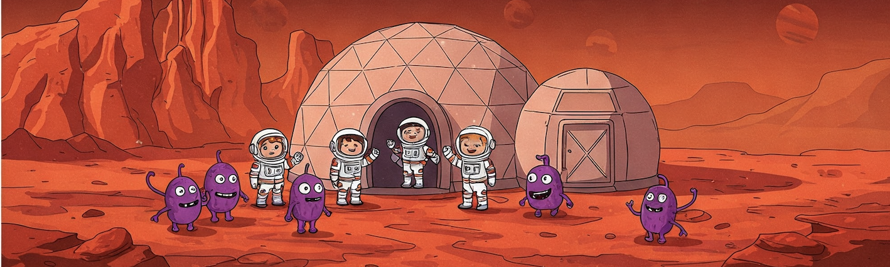
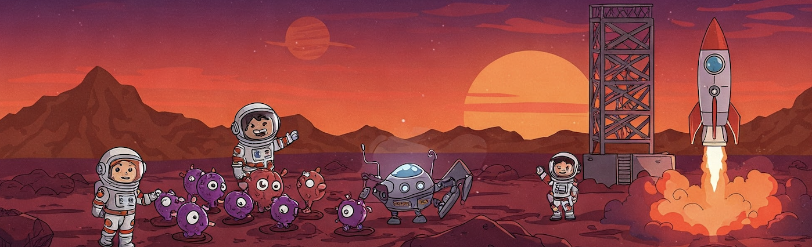
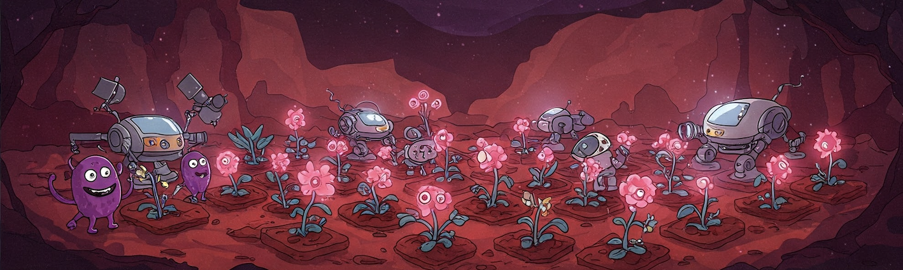

Around 4 billion years ago, Mars was not the barren wasteland we see today. In fact, it had a pleasant, oxygen-rich atmosphere and all the conditions necessary for life—though whether life ever existed there is still up for debate. So, what happened to all that? Mars no longer has a magnetic field because its core, although made of a similar composition to Earth's, has cooled and solidified. This left the red planet vulnerable to solar wind and radiation, which caused it to lose its atmosphere and become the bleak, desolate place we know today.
All that oxygen and water had to go somewhere, and that somewhere is now trapped in rocks and subterranean ice caps. To release these, we need to reverse the reactions that lock these gases in place through thermolysis. In other words, we need to melt Mars’s surface. Our laser would need to reach about 5500°C for thermolysis to occur and release 750 grams of oxygen per cubic meter of Martian rock. To access the water, we’d need to melt about 8 meters of the Martian surface, deepening some regions of lakes and rivers.
Once we've incinerated the Martian surface with our laser, it will look frightening. Storms will rage, raining down the water that’s been vaporized during this process. This storm could last for decades, eventually forming lakes and rivers. Additionally, a strange type of snow composed mainly of iron and silicon will fall from the sky, formed from materials that vaporized during the melting. This process will also wash away many toxic gases and harmful compounds.
However, our goal is still not met. The atmosphere is highly flammable because it is over 95% oxygen and lacks enough air to sustain life. To make it more akin to Earth’s atmosphere, we need nitrogen, and we know just where to get it: Titan, one of Saturn’s moons, has an atmosphere composed of 90% nitrogen. To properly harvest this, we would need to set up large automated factories to liquefy nitrogen and transport it directly to Mars using mass drivers—a machine that accelerates the payload to over 2 km/s, allowing it to reach Mars and explode on impact.
After all this effort and nearly a century of work, we would have restored Mars to its former glory, with all the conditions necessary for life. Getting life itself on the planet, however, will take even more effort. The journey of life on Earth began with phytoplankton in the ocean, and it wouldn’t be any different for Mars. We would start by seeding the oceans with vast quantities of phytoplankton. With abundant resources, these organisms would quickly populate, filling the oceans with greenery and serving as the base of the food chain. Gradually, we could introduce other animals, like zooplankton, and eventually work our way up to fish and possibly even sharks. With relatively little effort, the oceans could become a thriving ecosystem.
Achieving a stable land ecosystem, however, is much trickier, as we need plants—and plants need soil. Now, we’re left with two options: wait millennia for water and wind to naturally create soil, or repeatedly pulse our laser on and off, causing the rock to contract and expand rapidly, eventually forcing it to shatter. Add water, and we get mud. The best plants suited to the Martian environment are those native to volcanic regions here on Earth. Eventually, these plants would form the foundation for grasslands and forests. Their roots would break more rock into soil, creating a self-sustaining ecosystem. In the lesser gravity of Mars, trees could grow to new heights—previously impossible on Earth. Their roots would gather nutrients from deeper layers, forming more soil, which in turn would help create a self-sustaining ecosystem. At this point, we could begin to introduce more plants, insects, and even animals.
Finally, we must address the last problem: radiation. Mars doesn’t have a magnetic field, leaving it vulnerable to solar wind and radiation. The best solution is to create a solar umbrella to shield the planet from harmful solar wind and radiation. A large superconductive ring powered by nuclear energy could provide the necessary protection. With these steps completed, Mars would no longer be a barren wasteland—it would be a thriving, living world, ready for the next great human adventure.